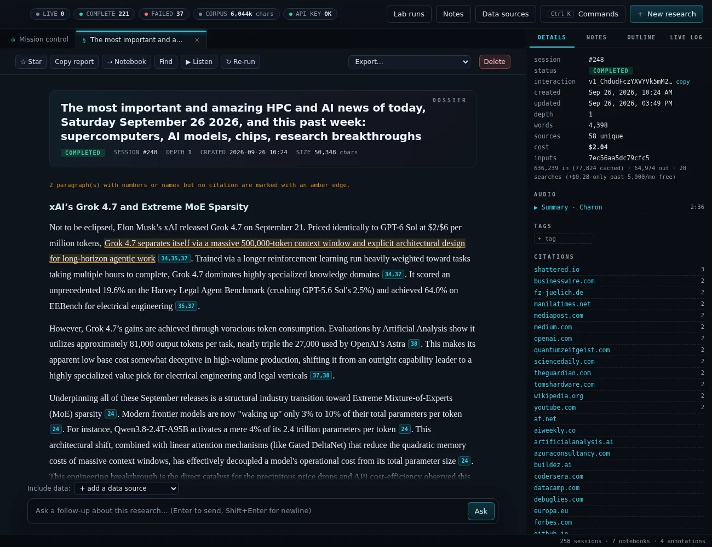
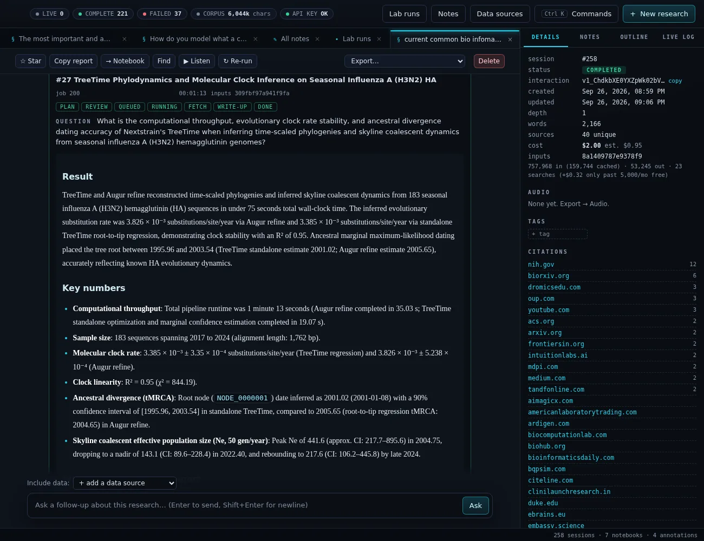
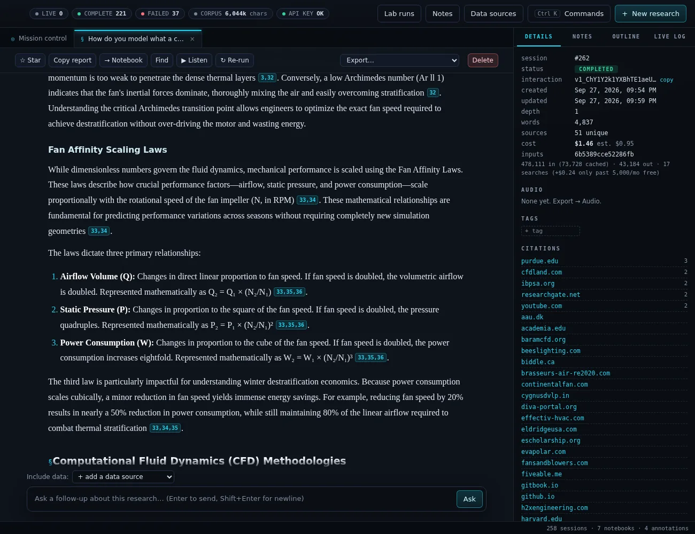
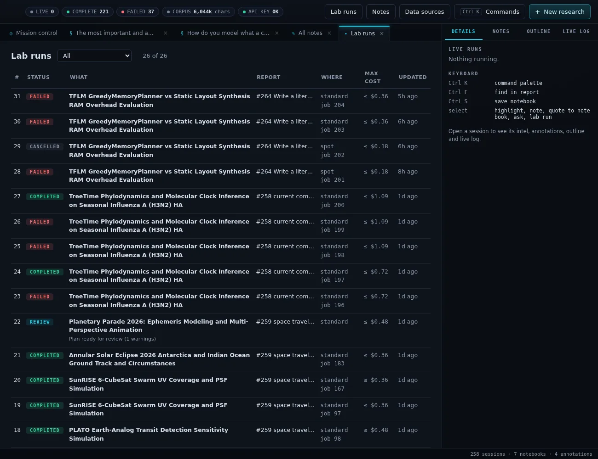
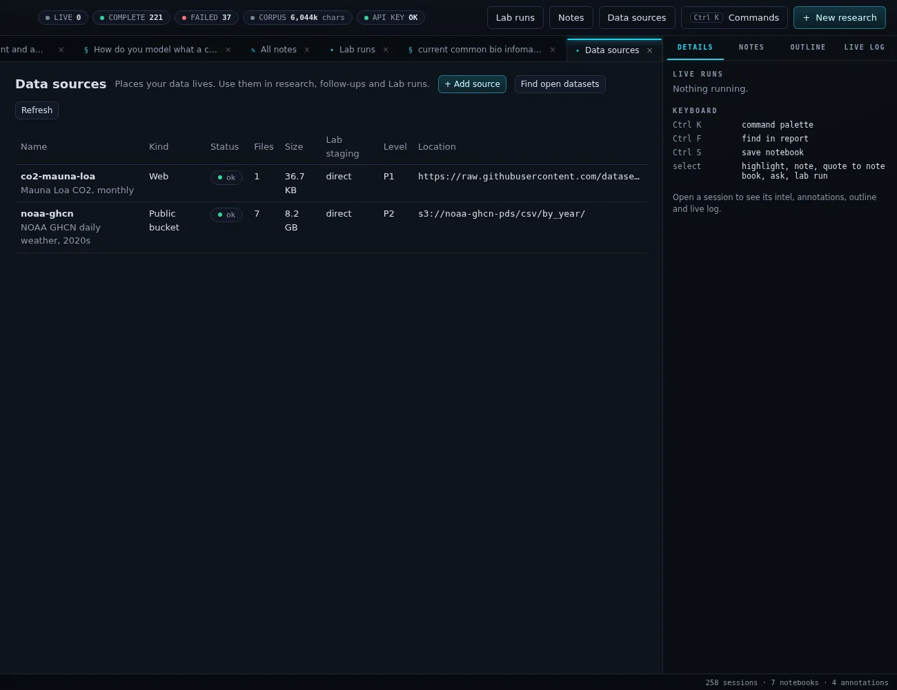
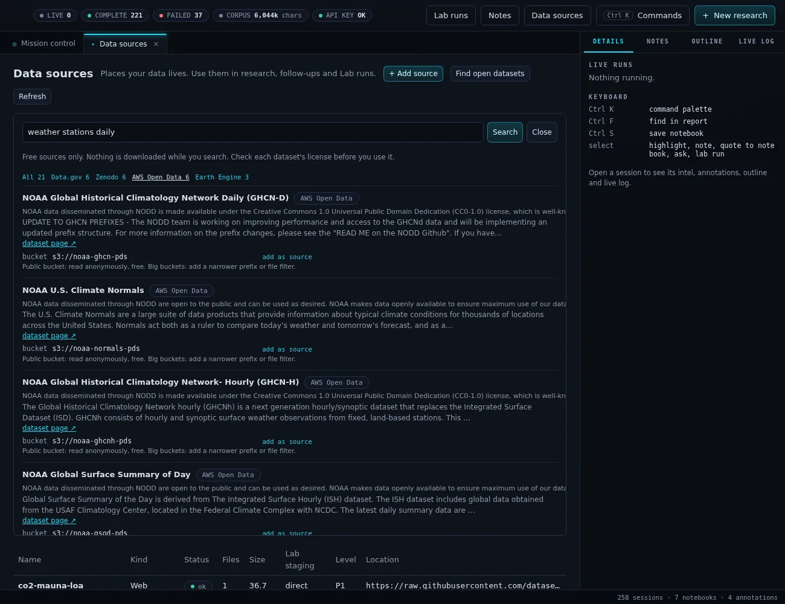
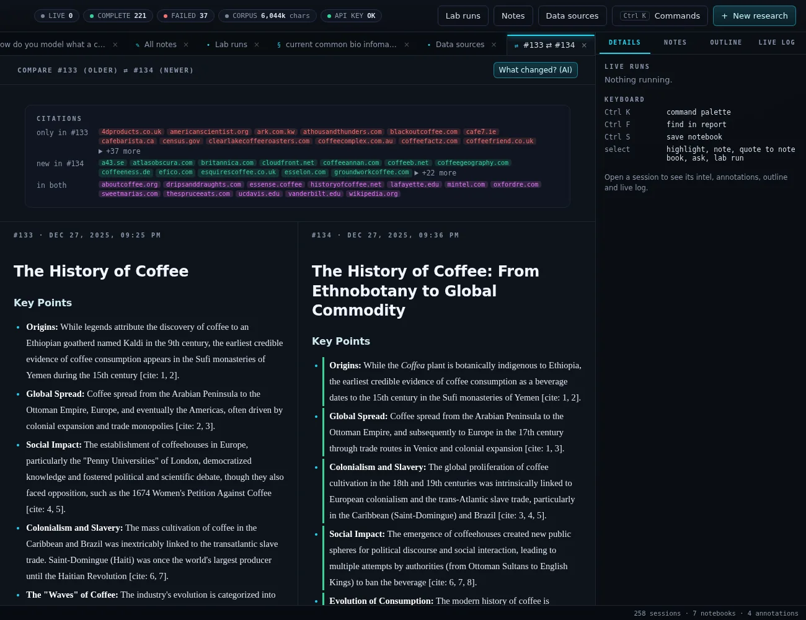
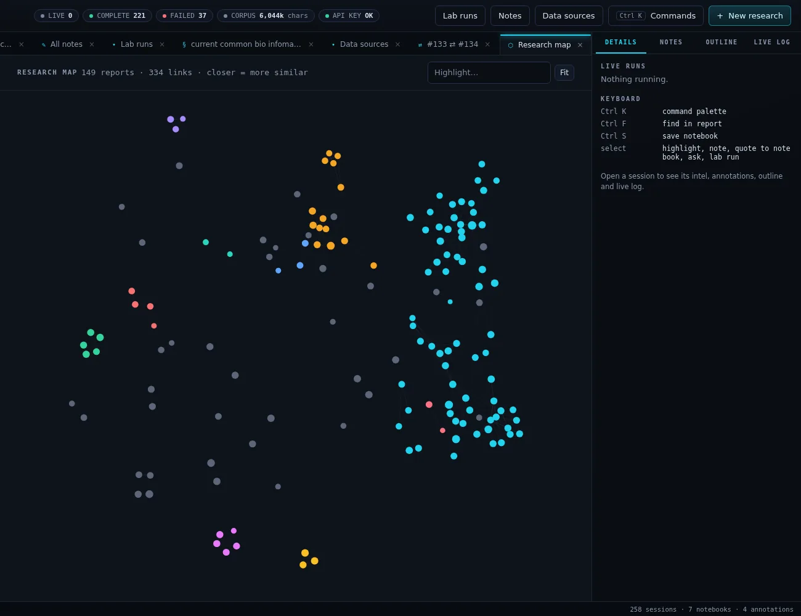
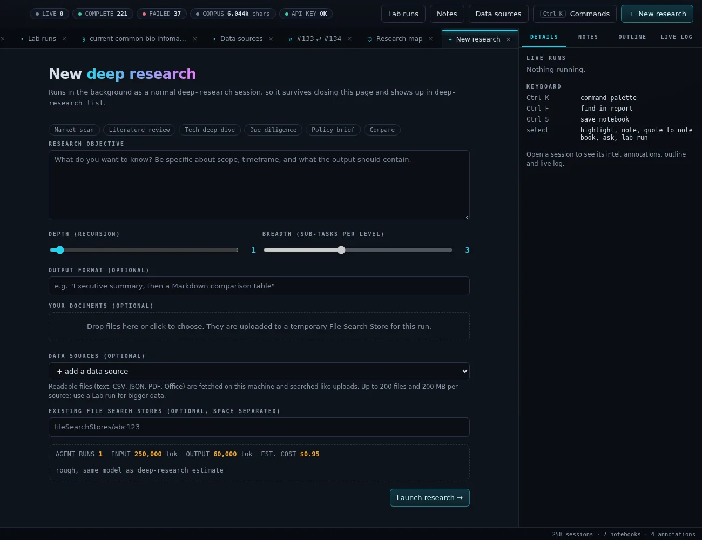
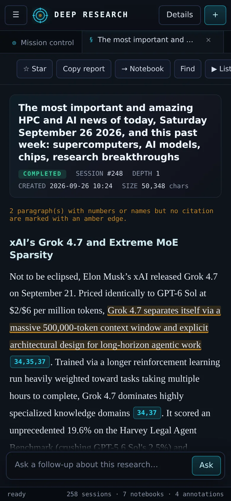

Recursive research
--depth and --breadth run a gap analysis that spawns parallel sub-research, then synthesize one final report. deep-research estimate prices it first with no API calls.
> deep-research v0.61.2 · Python 3.12+ · MIT
A command-line tool and self-hosted web workstation for Google's Gemini Deep Research agent.
Launch autonomous research, watch it think, then read, annotate, search, compare and listen to the cited reports it produces. Bring in your own and public data, and test a report's claims with real computations on an HPC cluster. Everything lives in a local SQLite history on your own machine.
# Install the CLI globally
$ uv tool install git+https://github.com/charles-forsyth/deep-research.git
# Save your API key (stored in ~/.config/deepresearch/.env)
$ deep-research auth login
# Run your first research task
$ deep-research "The history of the internet" --stream
# Open the workstation
$ deep-research dashboard --start
# then browse to http://localhost:7420
01 / What it does
The CLI runs the Gemini Deep Research agent (deep-research-preview-04-2026, or the Max agent), which plans, searches, reads and writes a cited report. The dashboard turns every report you have run into a library you keep building on.
--depth and --breadth run a gap analysis that spawns parallel sub-research, then synthesize one final report. deep-research estimate prices it first with no API calls.
Upload files or whole folders. They go to a temporary File Search Store that the agent searches first, and are cleaned up afterwards.
start runs survive closing the terminal, with PID tracking and honest crash detection. Streams reconnect automatically with exponential backoff.
Ask follow-up questions on any past session, run semantic search across your whole history, and export to Markdown, JSON, CSV or HTML. Every command takes --json.
Templates, depth and breadth sliders, a live cost estimate and drag-and-drop uploads. Then a live timeline of agent thoughts, sub-task lanes, elapsed time and actual cost.
A typeset reader with outline, find and grouped sources. Hover or tap [cite: 12] to see the claim and its source. Uncited paragraphs with figures are flagged.
Highlights, notes and Markdown notebooks with cited quotes. A brief builder turns a report or notebook into an executive brief, slide outline or email.
Read any report aloud in the browser's voice, or export an MP3 in a Gemini voice: the full text or an AI-written 2-3 minute spoken summary.
Turn a claim in a report into a real computation. Gemini drafts a plan and job script; a referee pass checks it; you review and edit it, with a worst-case cost, before anything is submitted.
Register web datasets, Google Drive, GCS, S3 buckets and local folders once. "Find open datasets" searches Data.gov, Zenodo, Hugging Face, AWS Open Data and more, offering only free sources.
Repeat a question later and see what changed, source by source. A research map places every report by topic similarity, clustered and clickable.
One project per grant, paper or thesis, with summaries, "Ask this project", briefs, exports and a claims board. Separate workspaces export to and import from a .zip.
02 / Screenshots
Three panes: archive on the left, tabbed work in the center, an inspector on the right. Shown here cropped to the work area. On phones the side panes become slide-out drawers.









03 / How it works
The dashboard adds no Python dependencies: it is a standard-library ThreadingHTTPServer serving vanilla JavaScript (with vendored marked and DOMPurify). Runs launched from it are ordinary background sessions: they appear in deep-research list and keep going if the dashboard restarts.
If a website blocks the cluster (403/429), "Fetch on this laptop" downloads the files locally, stages them as a data source and rewires the plan to read them.
04 / Design principles
Lab plans are drafts until a person submits them. AI fixes and referee rounds only ever produce another draft.
Lab outcomes come from checks the job writes, not from the write-up. Refuted and broken results are shown as such.
Migrations only add tables and columns. Your main library's data is never moved or rewritten by new features.
Everything except the Deep Research agent uses Gemini Flash. Free open data only: requester-pays buckets are refused.
Ctrl+K command palette, find and save shortcuts. Dialogs never confirm on a stray Enter, and Escape closes them.
A CI test fails when an API route, setting, module or command is missing from the specification.
127.0.0.1 (this machine only) by default. To reach it from another machine on a network you trust, pass --host 0.0.0.0 --allow-remote, or use an SSH tunnel.
05 / Quick start
Requirements: Python 3.12+, uv, and a Gemini API key on a paid tier (the Deep Research agent is not available on the free tier). ffmpeg is optional, for MP3 audio export.
# Install the CLI globally
uv tool install git+https://github.com/charles-forsyth/deep-research.git
# Save your API key (stored in ~/.config/deepresearch/.env)
deep-research auth login
# Run your first research task
deep-research "The history of the internet" --stream
# Open the workstation
deep-research dashboard --start # then browse to http://localhost:7420deep-research estimate "State of solid-state batteries" --depth 2 --breadth 3 # no API calls
deep-research research "State of solid-state batteries" --depth 2 --breadth 3
deep-research research "Summarize the key findings" --upload ./papers/ --stream
deep-research start "Detailed analysis of quantum computing" # background
deep-research list # recent sessions
deep-research followup 12 "Explain the error correction part simply"
deep-research search "What did I find about error correction?"
deep-research list --json # any command: one JSON document on stdoutdeep-research dashboard --start # background on 127.0.0.1:7420
deep-research dashboard --status # PID and URLs
deep-research dashboard --restart
deep-research dashboard --stop
deep-research dashboard --foreground --port 8080 # run in the terminalThe Deep Research agent is billed by Google at Gemini 3.1 Pro token rates plus Google Search grounding. Google's guidance works out to about $1 per agent run; measured runs have ranged from $0.37 to $2.04. Recursive runs multiply that by the number of agents (1 + breadth + breadth^2 ...), so run deep-research estimate first. The dashboard shows the estimate before launch and the actual cost afterwards. Lab plans with two referee rounds are typically $0.25-0.35; briefs and comparisons usually cost under a cent. Prices change: check Gemini API pricing.
06 / Links
This is an independent project and is not affiliated with or endorsed by Google.